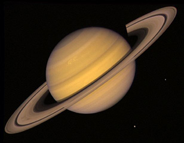

Saturn
Saturn is the sixth planet from the Sun and the second largest planet in the Solar System, after Jupiter. Saturn is a gas giant with an average radius about nine times that of Earth. While only one-eighth the average density of Earth, with its larger volume Saturn is just over 95 times more massive. Saturn's interior is thought to be composed of a core of iron, nickel and rock, surrounded by a deep layer of metallic hydrogen, an intermediate layer of liquid hydrogen and liquid helium and an outer gaseous layer. The planet exhibits a pale yellow hue due to ammonia crystals in its upper atmosphere. Saturn has a prominent ring system that consists of nine continuous main rings and three discontinuous arcs, composed mostly of ice particles with a smaller amount of rocky debris and dust. Sixty-two known moons orbit the planet; fifty-three are officially named. Titan, Saturn's largest and the Solar System's second largest moon, is larger than the planet Mercury and is the only moon in the Solar System to retain a substantial atmosphere.